Nouveau dans la 1.1 : volet de visualisation, mode lecture, gestionnaire de mots de passe, conversion d’archives et cinq langues de plus. Voir les changements
Ce qu’il fait
Tout ce qu’un logiciel de compression doit faire
Ouvrez zip, 7z, rar, tar, iso et des dizaines d’autres. Créez des zip, 7z et tar avec mot de passe AES-256. Parcourez, recherchez, faites glisser des fichiers vers l’Explorateur et convertissez une archive dans un autre format ; l’original reste jusqu’à ce que vous le supprimiez.
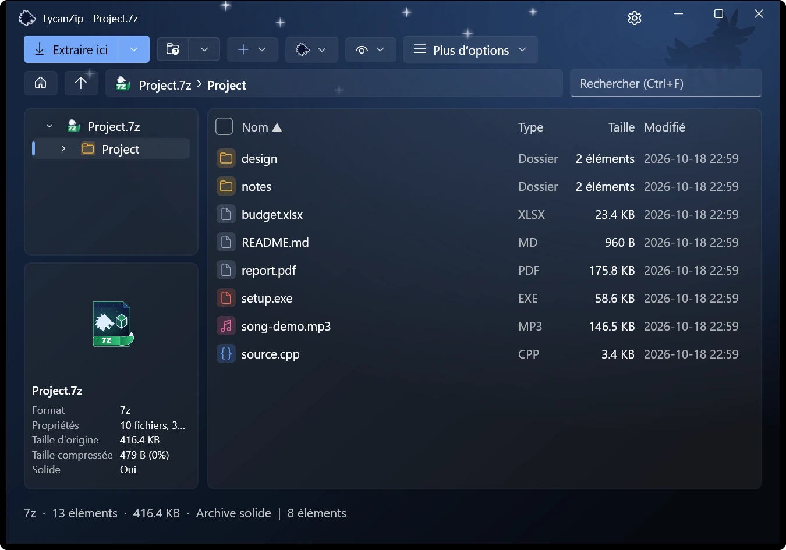
Une arborescence et une liste détaillée.
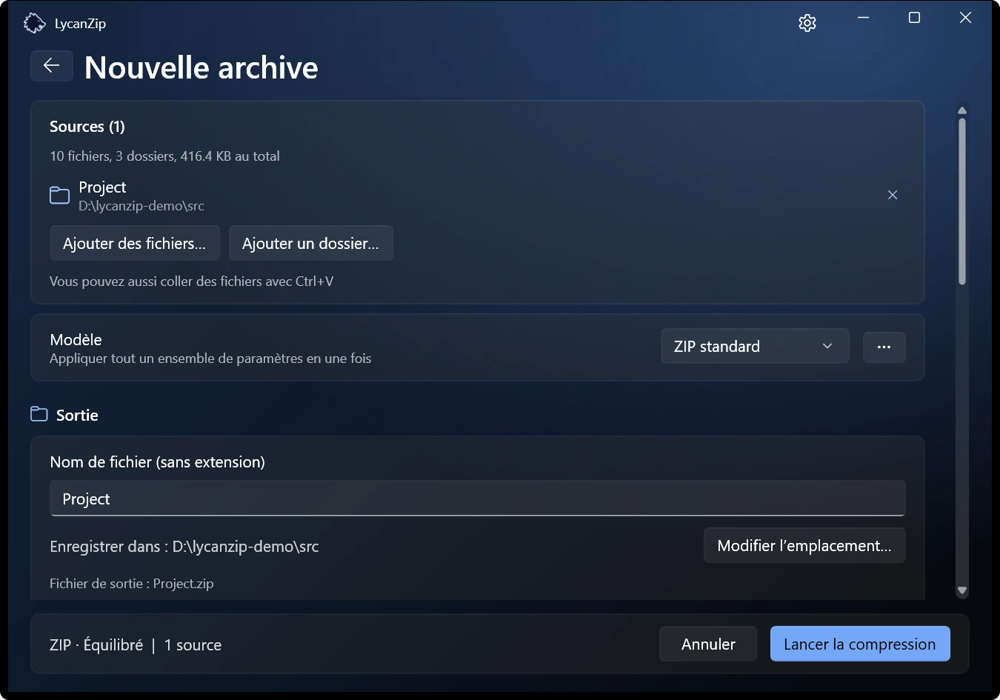
Créer une archive : un format et un mode.
Des noms de fichiers corrects
Les anciens zip avec des noms en Big5, GBK, Shift-JIS ou EUC-KR sont détectés automatiquement. Mettez à niveau une telle archive : les noms sont enregistrés en UTF-8 et se lisent correctement sur tout PC ; les données sont copiées telles quelles.
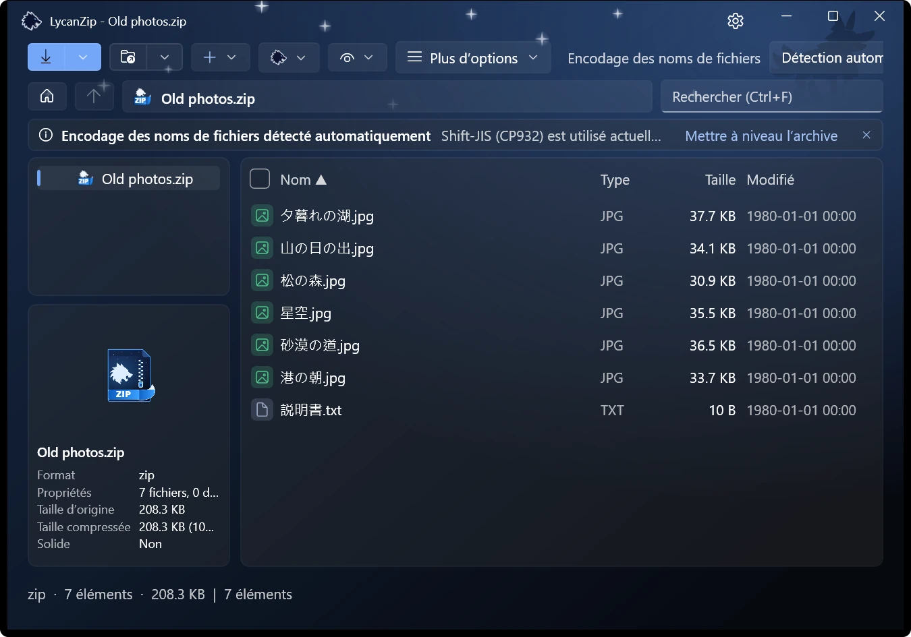
Détecté automatiquement : Shift-JIS.
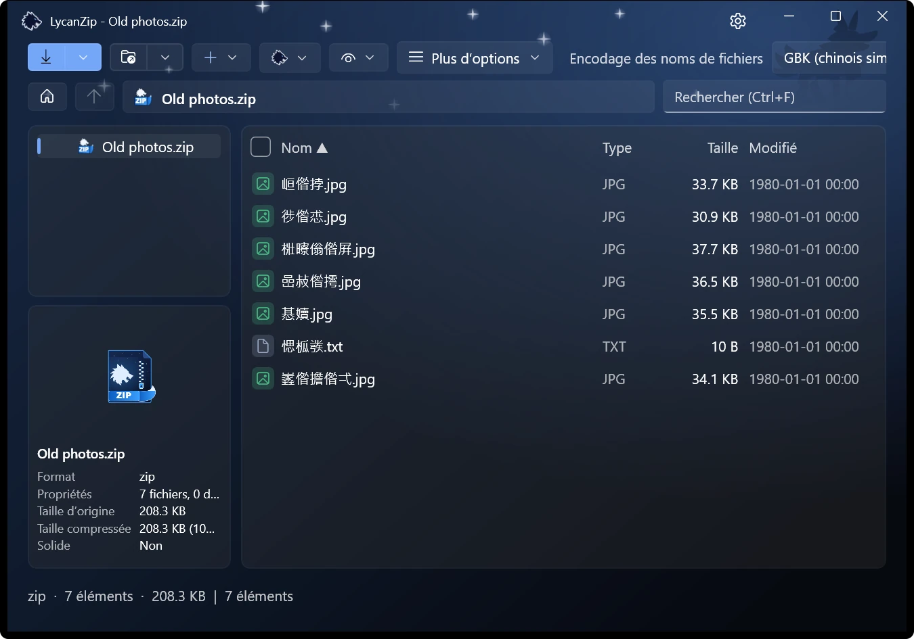
La même archive lue avec le mauvais encodage.
Regardez à l’intérieur sans extraire
Sélectionnez un fichier et le volet de visualisation l’affiche : images, texte, PDF et audio. Les images s’ouvrent aussi dans une visionneuse avec bande de miniatures, zoom et animations. La musique se joue dans un lecteur intégré qui affiche les balises.
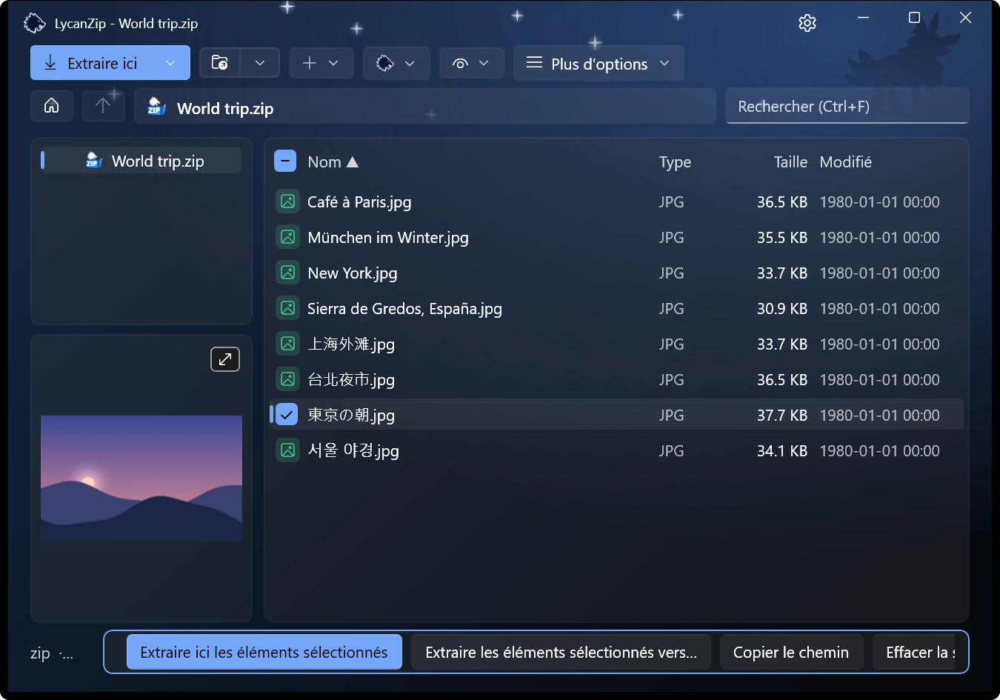
Le volet de visualisation suit la sélection.
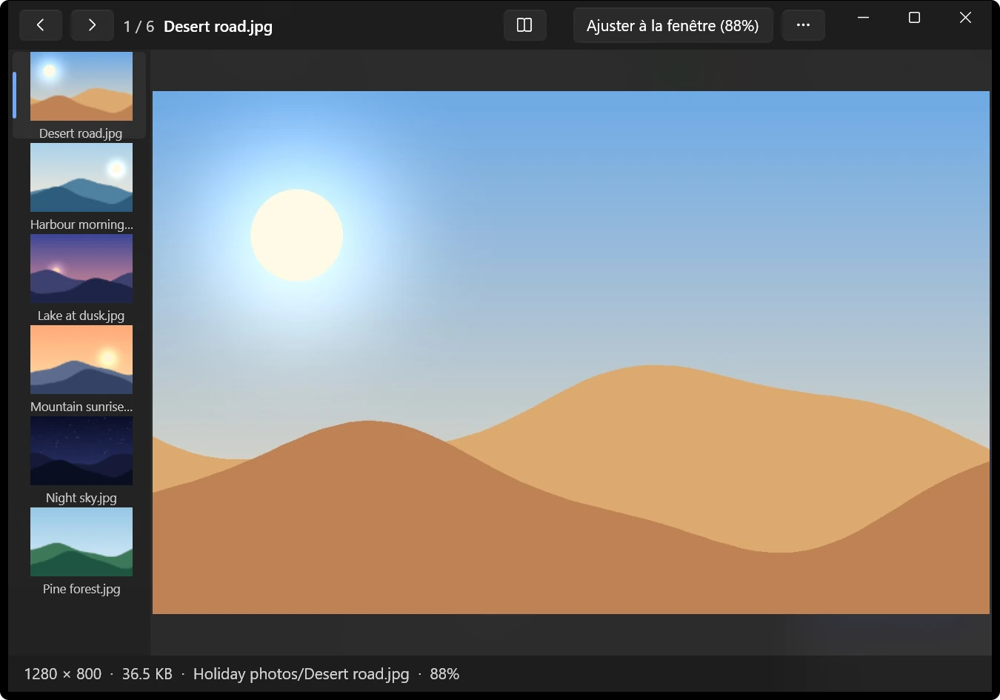
L’aperçu des images.
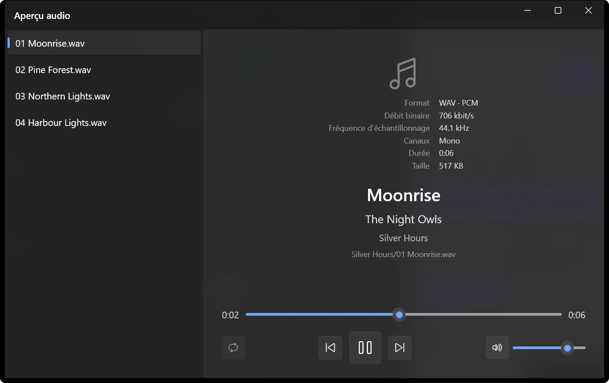
L’aperçu audio.
Un mode lecture pour les bandes dessinées
Un livre entier dans l’ordre, à travers les dossiers, deux pages côte à côte et de droite à gauche si vous le souhaitez. La page est mémorisée pour chaque livre. .cbz, .cbr, .cb7 et .cbt s’y ouvrent directement.
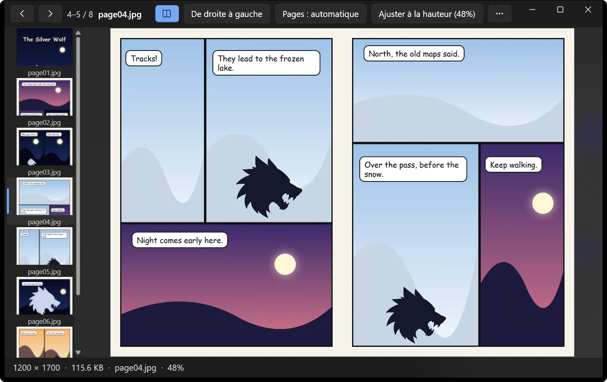
Deux pages côte à côte en mode lecture.
Un gestionnaire de mots de passe qui reste sur votre PC
Les mots de passe qui ont fonctionné pendant cette session et ceux enregistrés sont essayés avant de vous demander. Ceux enregistrés sont chiffrés pour votre compte Windows, avec un mot de passe principal facultatif. Rien n’est envoyé nulle part.
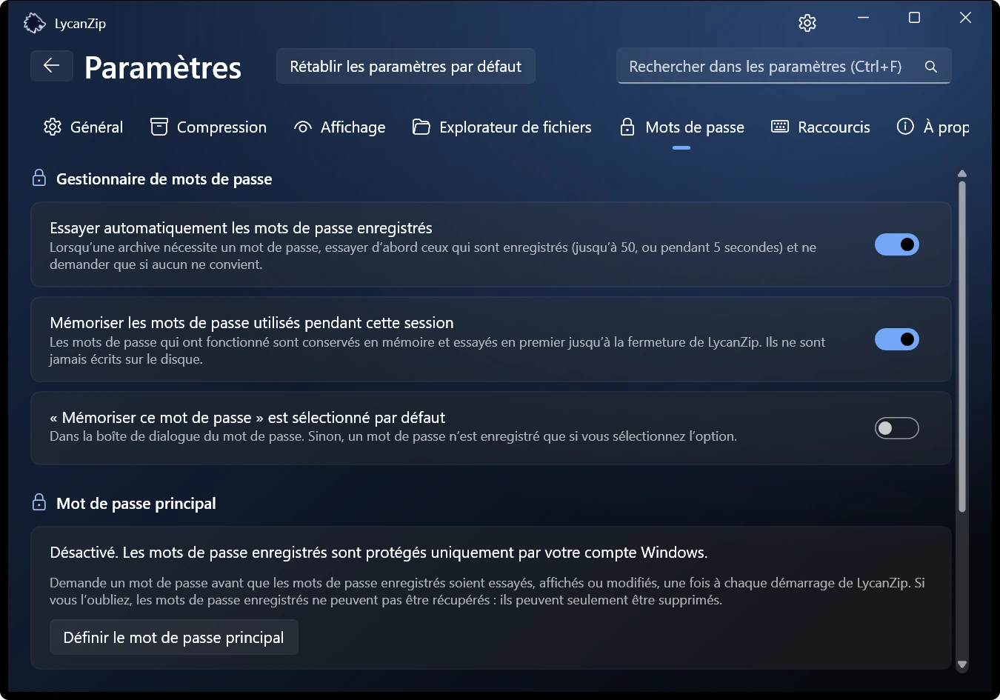
L’onglet Mots de passe des paramètres.
Le menu contextuel de Windows 11 Version Store uniquement
Des entrées directement au premier niveau du menu de Windows 11, sans passer par « Afficher d’autres options ». Windows ne l’autorise que pour un package signé : c’est donc réservé à la version Microsoft Store. Les autres versions utilisent le menu classique.
Sombre, clair, votre couleur
Clair ou sombre, six couleurs d’accentuation, ou simplement comme Windows. Des effets sonores facultatifs (deux jeux) et des animations que vous pouvez désactiver.
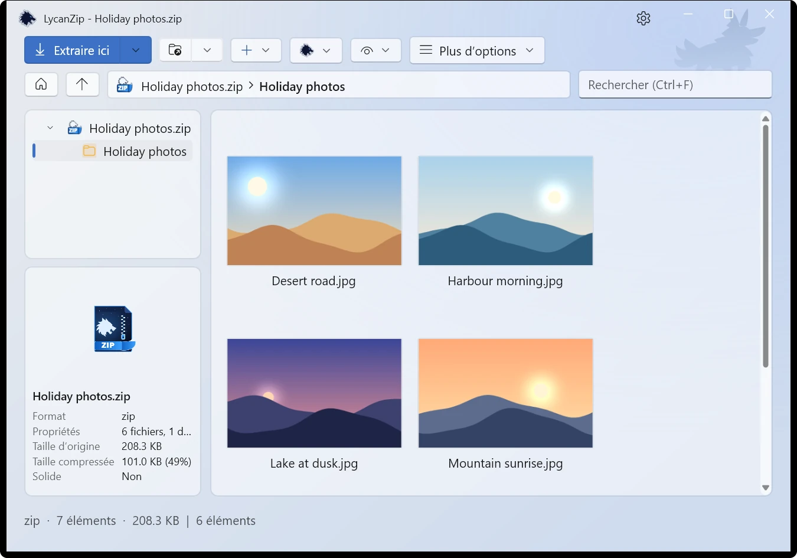
Clair · Clair de lune
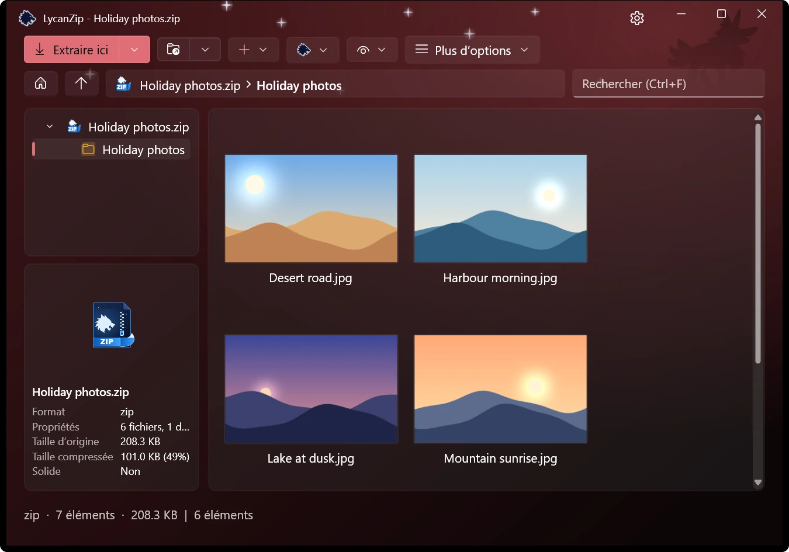
Sombre · Lune de sang
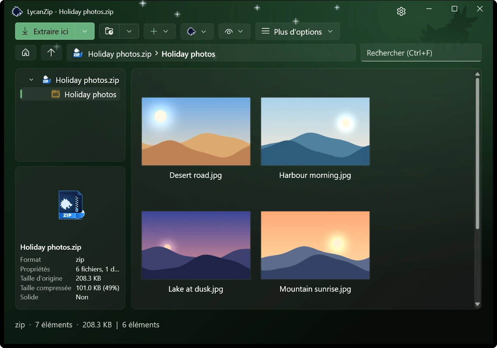
Sombre · Forêt
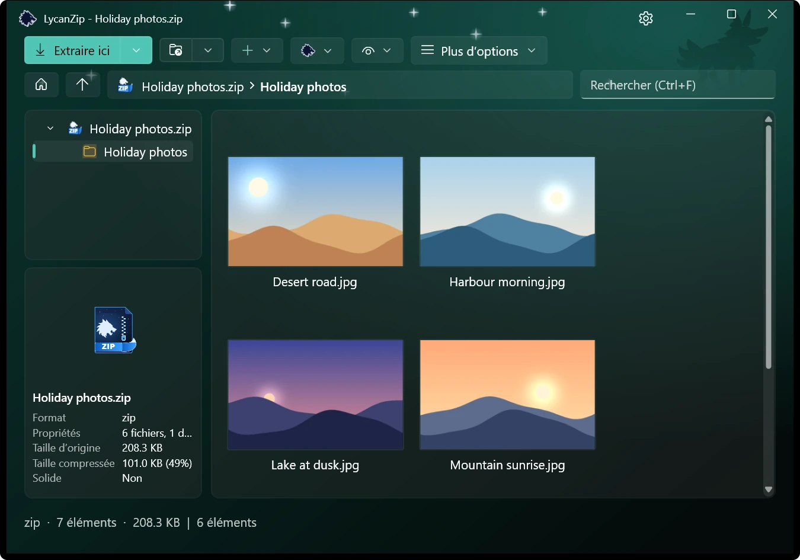
Sombre · Aurore
Modifiez une archive sur place
Ajoutez, supprimez, renommez, remplacez dans les zip, 7z et tar, ou modifiez un fichier dans votre propre éditeur et enregistrez-le. Le tout sur une copie sûre.
Sûr par conception
Pas de télémétrie, pas de publicité, aucune collecte. Et trois façons de vérifier ce que vous allez ouvrir :
Analyse antivirus
Analysez une archive avec votre propre antivirus via Windows AMSI, sans l’extraire sur le disque.
Contrôle SHA-256
Calculez le hachage de tout fichier, dossier ou archive. Vérifiez un fichier .sha256 d’un double-clic.
Recherche sur VirusTotal
Un clic ouvre la page VirusTotal du hachage du fichier. Seul le hachage est envoyé, jamais le fichier.
Les chemins dangereux sont refusés, les liens ne sont pas suivis et les bombes de décompression sont détectées.